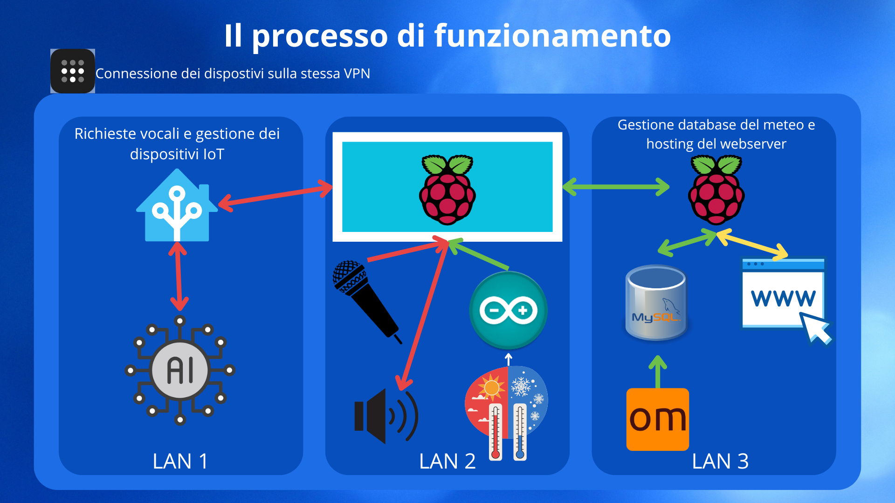

System Architecture
The Cyber Reflection is designed as a distributed system that integrates various hardware and software components to provide an interactive and personalized user experience. The system architecture is composed of the following main elements:
- Arduino H7: Microcontroller that collects environmental data (temperature and humidity) using the DHT11 sensor.
- Raspberry Pi Client: Device that acts as the main interface of the mirror. It manages voice interaction with the user, displays information on the screen, and communicates with the other system components.
- Raspberry Pi Server: Receives data from the Raspberry Pi Client and forwards it to the main server.
- Main Server: A PC that runs Home Assistant for managing automation logic and service integration.
To connect these components securely and efficiently, the system uses a combination of wired and wireless connections, and a virtual private network (VPN) created with Tailscale.
VPN with Tailscale
Tailscale is a mesh VPN that simplifies the connection between devices located behind NAT or firewalls. In our system, Tailscale is used to create a private network between the Raspberry Pi Server and the PC Server. This approach offers several advantages:
- Security: Traffic between devices is encrypted, ensuring data confidentiality.
- Simplicity: Tailscale automatically configures connections, eliminating the need for complex port forwarding configurations.
- Remote access: Allows access to devices from anywhere, as if they were on the same local network.
Limitations of Arduino and solution: Due to compatibility limitations, Arduino cannot directly participate in the Tailscale network. To overcome this, Arduino and the Raspberry Pi Client are connected to the same local network (LAN). The Raspberry Pi Client acts as a bridge, receiving data from Arduino via the LAN and forwarding it to the Raspberry Pi Server via the Tailscale VPN.
Communication Flow
The following diagram illustrates the communication flow between the various components of the system:
- Data collection: Arduino H7 collects data from environmental sensors (temperature, humidity, etc.) and sends it to the Raspberry Pi Client via the local network.
- Voice interaction: The user interacts with the Raspberry Pi Client via voice commands. The Raspberry Pi Client processes these commands and can also provide voice responses.
- Data transmission:
- The Raspberry Pi Client (Mirror) sends the data received from the Arduino to the Raspberry Pi Server via the local network.
- When the activation keyword (wake word) is detected, the Raspberry Pi Client also sends the user data (voice commands, etc.) to the PC Server via the Tailscale VPN.
- Data processing and responses: The PC Server (with Home Assistant) processes the received data, executes the automation logic, and sends responses to the Raspberry Pi Client via the Tailscale VPN.
- Information display: The Raspberry Pi Client (Mirror) displays relevant information (environmental data, voice command responses, etc.) on the mirror screen.